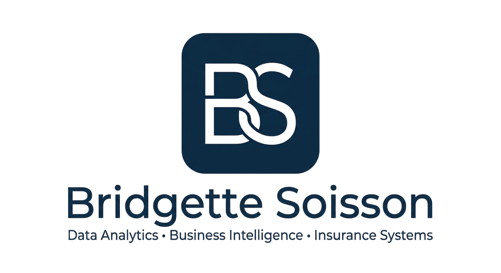

I help organizations transform complex data into actionable business insight through analytics, business intelligence, systems expertise, and quality assurance leadership.
I have more than 30 years of experience spanning actuarial science, insurance administration systems, quality assurance, data analytics, and business intelligence.
Most recently, my work has focused on Power BI, Tableau, SQL, Power Query, OIPA, testing automation, data validation, and business intelligence reporting that helps organizations make better decisions through data-driven insights.
Power BI, Tableau, SQL, analytics, audit reporting, and actuarial systems development.
OIPA testing, Power Query validation tools, JIRA test planning, and life insurance system implementations.
OIPA conversion support, ETL validation, Tableau reporting, actuarial validation, and insurance administration systems.
Pension administration, actuarial consulting, requirements analysis, and testing.
Pricing, premium validation, system testing, actuarial support, and managed care products.
Email: 220bridgette@gmail.com
Location: Chelem, Yucatán, Mexico
Available for Remote Opportunities
Interested in data analytics, business intelligence, insurance systems, and technology transformation initiatives.
LinkedIn: View Profile
WhatsApp: US: +1 (614) 607-0855 | MX: +52 288 139 8027